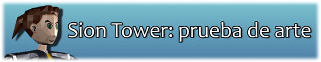
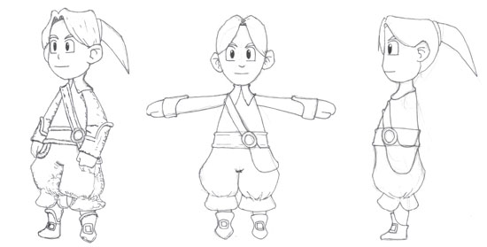
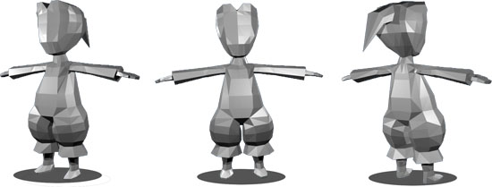
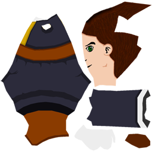
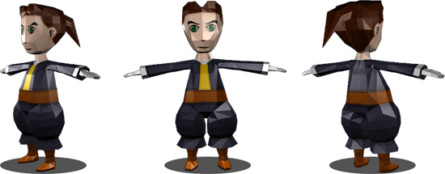

Sion Tower: prueba de arte
Oct 25, 2010 · 3 minute read · CommentsGames development

Mientras continúo con los artículos de IberOgre he querido comenzar el desarrollo del videojuego que ejemplificará todo su contenido, Sion Tower. El trabajo de este fin de semana lo he invertido en hacer pruebas de concepto para aclarar las ideas y tantear el modelado con Blender. Próximamente redactaré un documento de diseño más formal entrando en un mayor nivel de detalle. A continuación, aparte de demostrar que el diseño no es lo mío (¿algún artista se ofrece a colaborar?) hago un repaso sobre el proceso referenciando los tutoriales que he seguido.
Disclaimer: en absoluto estoy capacitado para dar lecciones sobre diseño o modelado 3D. En las siguientes líneas expongo mi experiencia durante el proceso con el objetivo de documentar mi trabajo. Si a alguien le resulta útil o encuentra ayuda en las referencias que menciono, mejor que mejor.
Bocetos
El estilo cartoon, de dibujo animado funciona estupendamente y no necesita de un nivel de detalle elevado, por ello lo he elegido para Sion Tower. Los bocetos son una buena forma de visualizar lo que se tiene en la cabeza, además, serán la base para el modelado 3D. Tomé como fuentes a personajes como Link (The Legend of Zelda) o Luneth (Final Fantasy III) aunque las malas lenguas dicen que también se parece a Guybrush Threepwood (Monkey Island).
Empecé con una vista en perspectiva aunque después realicé un alzado y un perfil simplificados con vistas a la fase de modelado. A base de ensayo/error me di cuenta de que las proporciones y los tamaños entre vistas deben ser iguales para poder construir el modelo con mayor comodidad.

Modelado
El modelado fue una fase complicada “gracias” a mi escasa experiencia. Existen varias opciones en cuanto a software de modelado (Maya, 3D Studio…) aunque la única opción libre es Blender. Para poder seguir cualquier tutorial que pulule por Internet es imprescindible tener cierto manejo de las operaciones básicas y su interfaz no es precisamente intuitiva. Lo que me interesaba era aprender lo básico de forma rápida, sin detenerse a examinar la funcionalidad de cada botón. Al respecto “Aprende Blender en 24” de Carlos González Morcillo es un imprescindible, además, está liberado bajo Creative Commons.
Habiendo alcanzado el grado de “Maestro Liendre” en Blender encontré este tutorial para modelar personajes con pocos polígonos. El proceso se ilustra con un superhéroe, no obstante, la técnica se aplica a cualquier modelo humanoide. Iba con miedo por si metía la pata pero al final me di cuenta de que es algo inevitable si se quiere aprender y avanzar. Como consejos finales puntualizaría que hay que tener mucho cuidado para no duplicar vértices y es importante mantener las normales hacia afuera (que las caras del modelo no miren hacia adentro).

Texturizado
La fase de texturizado puede convertirse en una verdadera pesadilla si no se siguen las indicaciones correctas. Cuando proyectamos el personaje en un plano bidimensional se producen deformaciones al igual que ocurre con un globo terráqueo sobre un mapa. Si no distribuimos los vértices sobre el plano de forma correcta la textura no encajará jamás y obtendremos un resultado muy malo.
Este tutorial me fue de gran ayuda aunque prefiero exportar la plantilla de la textura y editarla desde The Gimp utilizando la potencia que ofrece esta herramienta en contraposición con el editor de Blender (capas, pinceles, colores…).

Conclusiones
Han sido un par de días de incertidumbre y trabajo duro ¡y aún no he empezado con la animación! He aprendido muchísimo y estoy seguro de que la próxima vez que trate de crear un personaje tardaré menos y el resultado tendrá mayor calidad. Eso sí, si algún artista está interesado en colaborar… ¡dejo el pincel por el resto de facetas del desarrollo!
